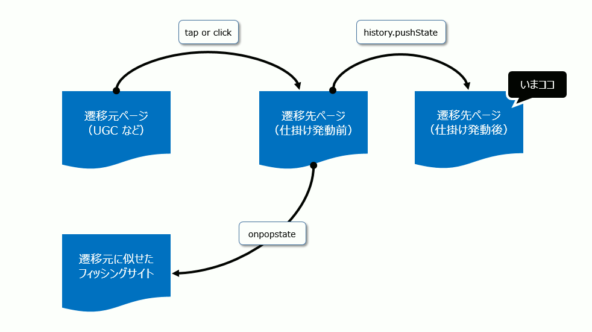

After click, "history.pushStat" API is called.
Of course, you can't find the information you want.
(Because this is a part of trick for phishing.)
Then, you use back button to go backward page.
This dialog is to get user interaction.
Chrome needs user interaction for this trick.
close